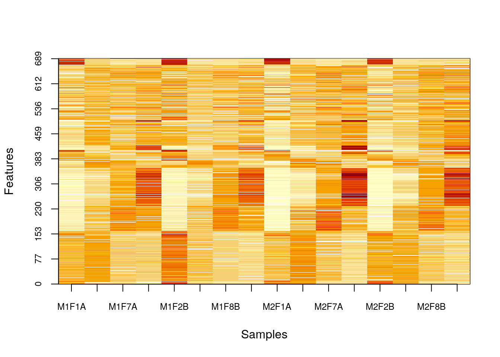
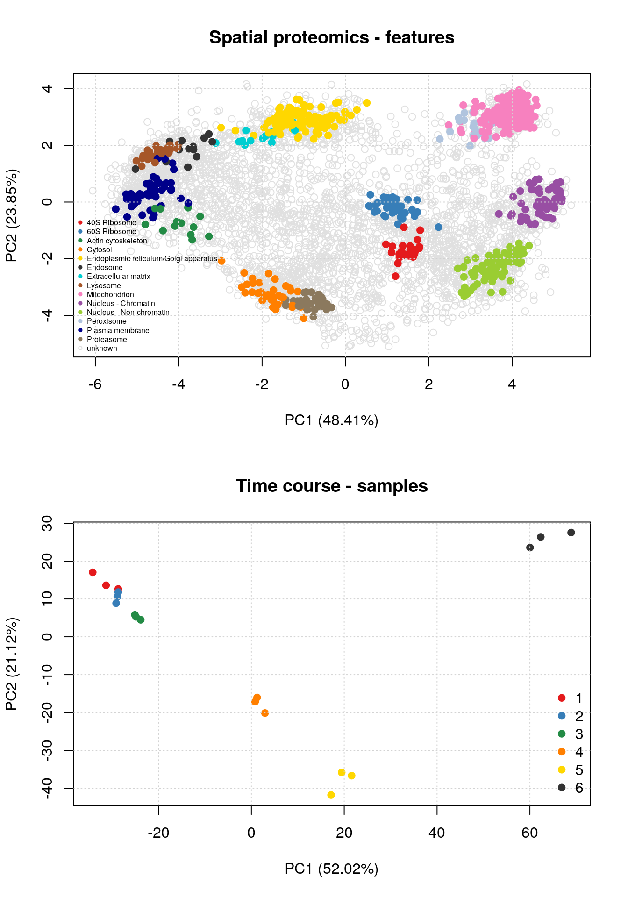

Chapter 7 Using R and Bioconductor for MS-based proteomics
7.1 Introduction
R and Bioconductor offer a range of dedicated packages for the analysis of mass spectrometry-based proteomics. The advantage of such technology-infrastructure is that offer specific behaviour for these kind of data.
The RforProteomics package provides a first introduction to what is available. It is also possible to navigate the biocViews hierarchy (these are tags that are used to describe individual package’s domain of action).
The highest level defines 3 types of packages:
- Software: packages providing a specific functionality.
- AnnotationData: packages providing annotations, such as various ontologies, species annotations, microarray annotations, …
- ExperimentData: packages distributing experiments.
The biocViews that are relevant here are Proteomcis, MassSpectrometry and MassSpectrometryData.
The biocViews page is available here
It is most easily accessed by clicking on the software packages link on the homepage, under About Bioconductor.

See also this page for additional information.
Here, we will focus on the MSnbase package, as it supports all types of MS-based proteomics data and files that one would generally encounter:
- Raw data
- Identification data
- Quantiative data
The respective types of data come in the form of
mzMLfiles (mzXMLandnetCDFare also supported)mzIdentMLfiles (abbreviatedmzid)- Arbitrary spreadsheets or
mzTabfiles
which can be read into R using
readMSDatareadMzIdDatareadMSnSet2orreadMzTabData
Once loaded in R, the data are stored as dedicated data structures
MSnExp(an MS experiment)data.frameMSnSet(an MS expression set)
##
##
## data file.type function. class
## --------------- ------------ -------------- -----------
## raw mzML readMSData MSnExp
## identification mzIdentML readMzIdData data.frame
## quantitation spreadsheet readMSnSet2 MSnSet
## quantitation mzTab readMzTabdata MSnSetTo start, let’s load the MSnbase package
library("MSnbase")We will make use of test data that is provided by the experiment package msdata, that we load below. We then extract the file names that will be used later on.
library("msdata")
rawf <- msdata::proteomics(full.names = TRUE, pattern = "20141210")
basename(rawf)## [1] "TMT_Erwinia_1uLSike_Top10HCD_isol2_45stepped_60min_01-20141210.mzML.gz"idf <- msdata::ident(full.names = TRUE)
basename(idf)## [1] "TMT_Erwinia_1uLSike_Top10HCD_isol2_45stepped_60min_01-20141210.mzid"7.2 Reading MS data into R
Raw data
rw <- readMSData(rawf, mode = "onDisk")
rw## MSn experiment data ("OnDiskMSnExp")
## Object size in memory: 2.96 Mb
## - - - Spectra data - - -
## MS level(s): 1 2
## Number of spectra: 7534
## MSn retention times: 0:0 - 60:2 minutes
## - - - Processing information - - -
## Data loaded [Mon May 7 11:41:51 2018]
## MSnbase version: 2.6.0
## - - - Meta data - - -
## phenoData
## rowNames:
## TMT_Erwinia_1uLSike_Top10HCD_isol2_45stepped_60min_01-20141210.mzML.gz
## varLabels: sampleNames
## varMetadata: labelDescription
## Loaded from:
## TMT_Erwinia_1uLSike_Top10HCD_isol2_45stepped_60min_01-20141210.mzML.gz
## protocolData: none
## featureData
## featureNames: F1.S0001 F1.S0002 ... F1.S7534 (7534 total)
## fvarLabels: fileIdx spIdx ... spectrum (29 total)
## fvarMetadata: labelDescription
## experimentData: use 'experimentData(object)'chr <- chromatogram(rw)
chr## Chromatograms with 1 row and 1 column
## TMT_Erwinia_1uLSike_Top10HCD_isol2_45stepped_60min_01-20141210.mzML.gz
## <Chromatogram>
## [1,] length: 1431
## phenoData with 1 variables
## featureData with 1 variablesIdentification data
id <- readMzIdData(idf)
id## sequence
## 1 RQCRTDFLNYLR
## 2 ESVALADQVTCVDWRNRKATKK
## 3 KELLCLAMQIIR
## spectrumID chargeState rank
## 1 controllerType=0 controllerNumber=1 scan=2949 3 1
## 2 controllerType=0 controllerNumber=1 scan=6534 2 1
## 3 controllerType=0 controllerNumber=1 scan=5674 2 1
## passThreshold experimentalMassToCharge calculatedMassToCharge modNum
## 1 TRUE 548.2856 547.9474 1
## 2 TRUE 1288.1528 1288.1741 1
## 3 TRUE 744.4109 744.4255 1
## isDecoy post pre start end DatabaseAccess DBseqLength
## 1 FALSE V R 574 585 ECA2006 1295
## 2 FALSE G R 69 90 ECA1676 110
## 3 TRUE Q R 131 142 XXX_ECA2855 157
## DatabaseSeq
## 1
## 2
## 3
## DatabaseDescription
## 1 ECA2006 ATP-dependent helicase
## 2 ECA1676 putative growth inhibitory protein
## 3
## acquisitionNum
## 1 2949
## 2 6534
## 3 5674
## spectrumFile
## 1 TMT_Erwinia_1uLSike_Top10HCD_isol2_45stepped_60min_01-20141210.mzML
## 2 TMT_Erwinia_1uLSike_Top10HCD_isol2_45stepped_60min_01-20141210.mzML
## 3 TMT_Erwinia_1uLSike_Top10HCD_isol2_45stepped_60min_01-20141210.mzML
## idFile
## 1 TMT_Erwinia_1uLSike_Top10HCD_isol2_45stepped_60min_01-20141210.mzid
## 2 TMT_Erwinia_1uLSike_Top10HCD_isol2_45stepped_60min_01-20141210.mzid
## 3 TMT_Erwinia_1uLSike_Top10HCD_isol2_45stepped_60min_01-20141210.mzid
## MS.GF.RawScore MS.GF.DeNovoScore MS.GF.SpecEValue MS.GF.EValue
## 1 10 101 4.617121e-08 1.321981e-01
## 2 12 121 7.255875e-08 2.087481e-01
## 3 8 74 9.341019e-08 2.674533e-01
## MS.GF.QValue MS.GF.PepQValue modName modMass modLocation
## 1 0.52542370 0.54901963 Carbamidomethyl 57.02146 3
## 2 0.61038960 0.62318840 Carbamidomethyl 57.02146 11
## 3 0.62500000 0.63636360 Carbamidomethyl 57.02146 5
## subOriginalResidue subReplacementResidue subLocation
## 1 <NA> <NA> NA
## 2 <NA> <NA> NA
## 3 <NA> <NA> NA
## [ reached getOption("max.print") -- omitted 5799 rows ]fvarLabels(rw)## [1] "fileIdx" "spIdx"
## [3] "smoothed" "seqNum"
## [5] "acquisitionNum" "msLevel"
## [7] "polarity" "originalPeaksCount"
## [9] "totIonCurrent" "retentionTime"
## [11] "basePeakMZ" "basePeakIntensity"
## [13] "collisionEnergy" "ionisationEnergy"
## [15] "lowMZ" "highMZ"
## [17] "precursorScanNum" "precursorMZ"
## [19] "precursorCharge" "precursorIntensity"
## [21] "mergedScan" "mergedResultScanNum"
## [23] "mergedResultStartScanNum" "mergedResultEndScanNum"
## [25] "injectionTime" "filterString"
## [27] "spectrumId" "centroided"
## [29] "spectrum"rw <- addIdentificationData(rw, idf)
fvarLabels(rw)## [1] "fileIdx" "spIdx"
## [3] "smoothed" "seqNum"
## [5] "acquisitionNum" "msLevel"
## [7] "polarity" "originalPeaksCount"
## [9] "totIonCurrent" "retentionTime"
## [11] "basePeakMZ" "basePeakIntensity"
## [13] "collisionEnergy" "ionisationEnergy"
## [15] "lowMZ" "highMZ"
## [17] "precursorScanNum" "precursorMZ"
## [19] "precursorCharge" "precursorIntensity"
## [21] "mergedScan" "mergedResultScanNum"
## [23] "mergedResultStartScanNum" "mergedResultEndScanNum"
## [25] "injectionTime" "filterString"
## [27] "spectrumId" "centroided"
## [29] "spectrum" "acquisition.number"
## [31] "sequence" "chargeState"
## [33] "rank" "passThreshold"
## [35] "experimentalMassToCharge" "calculatedMassToCharge"
## [37] "modNum" "isDecoy"
## [39] "post" "pre"
## [41] "start" "end"
## [43] "DatabaseAccess" "DBseqLength"
## [45] "DatabaseSeq" "DatabaseDescription"
## [47] "idFile" "MS.GF.RawScore"
## [49] "MS.GF.DeNovoScore" "MS.GF.SpecEValue"
## [51] "MS.GF.EValue" "MS.GF.QValue"
## [53] "MS.GF.PepQValue" "modName"
## [55] "modMass" "modLocation"
## [57] "subOriginalResidue" "subReplacementResidue"
## [59] "subLocation" "nprot"
## [61] "npep.prot" "npsm.prot"
## [63] "npsm.pep"Quantitative data
library("pRolocdata")
qtf <- dir(system.file("extdata", package = "pRolocdata"),
full.names = TRUE,
pattern = "Dunkley2006")
basename(qtf)## [1] "Dunkley2006.csv.gz"qt <- readMSnSet2(qtf, ecol = 5:20)
qt## MSnSet (storageMode: lockedEnvironment)
## assayData: 689 features, 16 samples
## element names: exprs
## protocolData: none
## phenoData: none
## featureData
## featureNames: 1 2 ... 689 (689 total)
## fvarLabels: Protein.ID Loc.Predicted ... pd.markers (6 total)
## fvarMetadata: labelDescription
## experimentData: use 'experimentData(object)'
## Annotation:
## - - - Processing information - - -
## MSnbase version: 2.6.07.3 Manipulating and visualising raw data
plot(chr)
rawf <- proteomics(full.names = TRUE, pattern = "MS3TMT11")
basename(rawf)## [1] "MS3TMT11.mzML"rw <- readMSData(rawf, mode = "onDisk")
rw## MSn experiment data ("OnDiskMSnExp")
## Object size in memory: 0.5 Mb
## - - - Spectra data - - -
## MS level(s): 1 2 3
## Number of spectra: 994
## MSn retention times: 45:27 - 47:6 minutes
## - - - Processing information - - -
## Data loaded [Mon May 7 12:06:13 2018]
## MSnbase version: 2.6.0
## - - - Meta data - - -
## phenoData
## rowNames: MS3TMT11.mzML
## varLabels: sampleNames
## varMetadata: labelDescription
## Loaded from:
## MS3TMT11.mzML
## protocolData: none
## featureData
## featureNames: F1.S001 F1.S002 ... F1.S994 (994 total)
## fvarLabels: fileIdx spIdx ... spectrum (29 total)
## fvarMetadata: labelDescription
## experimentData: use 'experimentData(object)'table(centroided(rw), msLevel(rw))##
## 1 2 3
## FALSE 30 0 0
## TRUE 0 482 482head(acquisitionNum(rw))## F1.S001 F1.S002 F1.S003 F1.S004 F1.S005 F1.S006
## 21945 21946 21947 21948 21949 21950i <- 21945
rw2 <- filterPrecursorScan(rw, 21945)
rw2## MSn experiment data ("OnDiskMSnExp")
## Object size in memory: 0.05 Mb
## - - - Spectra data - - -
## MS level(s): 1 2 3
## Number of spectra: 35
## MSn retention times: 45:27 - 45:30 minutes
## - - - Processing information - - -
## Data loaded [Mon May 7 12:06:13 2018]
## Filter: select parent/children scans for 21945 [Mon May 7 12:06:14 2018]
## MSnbase version: 2.6.0
## - - - Meta data - - -
## phenoData
## rowNames: MS3TMT11.mzML
## varLabels: sampleNames
## varMetadata: labelDescription
## Loaded from:
## MS3TMT11.mzML
## protocolData: none
## featureData
## featureNames: F1.S001 F1.S002 ... F1.S035 (35 total)
## fvarLabels: fileIdx spIdx ... spectrum (29 total)
## fvarMetadata: labelDescription
## experimentData: use 'experimentData(object)'rw2[[1]]## Object of class "Spectrum1"
## Retention time: 45:27
## MSn level: 1
## Total ion count: 10768
## Polarity: 1plot(rw[[1]])
rw2[[3]]## Object of class "Spectrum2"
## Precursor: 599.7978
## Retention time: 45:27
## Charge: 2
## MSn level: 2
## Peaks count: 630
## Total ion count: 4263413plot(rw2[[3]], full = TRUE)
rw2[[4]]## Object of class "Spectrum2"
## Precursor: 452.2501
## Retention time: 45:27
## Charge: 2
## MSn level: 3
## Peaks count: 283
## Total ion count: 58042870plot(rw2[[4]], reporters = TMT11)
7.4 MS maps
rawf <- msdata::proteomics(full.names = TRUE, pattern = "20141210")
basename(rawf)## [1] "TMT_Erwinia_1uLSike_Top10HCD_isol2_45stepped_60min_01-20141210.mzML.gz"rw <- readMSData(rawf, mode = "onDisk")
## indeices of MS1 with retention times 30 - 35
ms1 <- which(msLevel(rw) == 1)
rtsel <- rtime(rw)[ms1] / 60 > 30 &
rtime(rw)[ms1] / 60 < 35
M <- MSmap(rw, scans = ms1[rtsel],
lowMz = 521, highMz = 523,
resMz = .005)## 1plot(M, aspect = 1, allTicks = FALSE)
plot3D(M)
i <- ms1[which(rtsel)][1]
j <- ms1[which(rtsel)][2]
M2 <- MSmap(rw, i:j, 100, 1000, 1)## 1plot3D(M2)It is then possible to build maps for successive retention times or M/Z ranges and generate animations (see [here])(https://lgatto.github.io/RforProteomics/articles/RProtVis.html#visualising-mass-spectrometry-data). for code)


7.5 Peptide spetrum matches
data(itraqdata)
itraqdata <- pickPeaks(itraqdata)
i <- 14
s <- as.character(fData(itraqdata)[i, "PeptideSequence"])
calculateFragments(s)## mz ion type pos z seq
## 1 88.03931 b1 b 1 1 S
## 2 201.12337 b2 b 2 1 SI
## 3 258.14483 b3 b 3 1 SIG
## 4 405.21324 b4 b 4 1 SIGF
## 5 534.25583 b5 b 5 1 SIGFE
## 6 591.27729 b6 b 6 1 SIGFEG
## 7 706.30423 b7 b 7 1 SIGFEGD
## 8 793.33626 b8 b 8 1 SIGFEGDS
## 9 906.42032 b9 b 9 1 SIGFEGDSI
## 10 963.44178 b10 b 10 1 SIGFEGDSIG
## 11 175.11895 y1 y 1 1 R
## 12 232.14041 y2 y 2 1 GR
## 13 345.22447 y3 y 3 1 IGR
## 14 432.25650 y4 y 4 1 SIGR
## 15 547.28344 y5 y 5 1 DSIGR
## 16 604.30490 y6 y 6 1 GDSIGR
## [ reached getOption("max.print") -- omitted 16 rows ]plot(itraqdata[[i]], s, main = s)
plot(itraqdata[[41]], itraqdata[[42]])
See also the protViz package for MS2 spectra annotation and visualisation.
The MSGFgui package provides an interactive interface to navigate and investigate identification data using interactive plots, summary statistics and filtering.

7.6 MS imaging
There are (at least) two packages, namely and Cardinal (web site)
Cardinal imaging
and MALDIquant

MALDIquant imaging - try the shiny app
that support MS imaging.
7.7 Missing values
data(naset)
image2(naset)
image2(is.na(naset), col = c("black", "white"))naplot(naset) ## PCA plots
## PCA plots
par(mfrow = c(1, 2))
plot2D(hyperLOPIT2015, main = "Spatial proteomics - features")
addLegend(hyperLOPIT2015, where = "bottomleft", cex = .5)
plot2D(t(mulvey2015norm), fcol = "times", main = "Time course - samples")
addLegend(t(mulvey2015norm), where = "bottomright", fcol = "times")